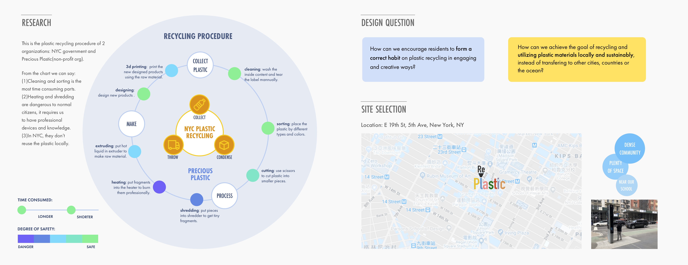
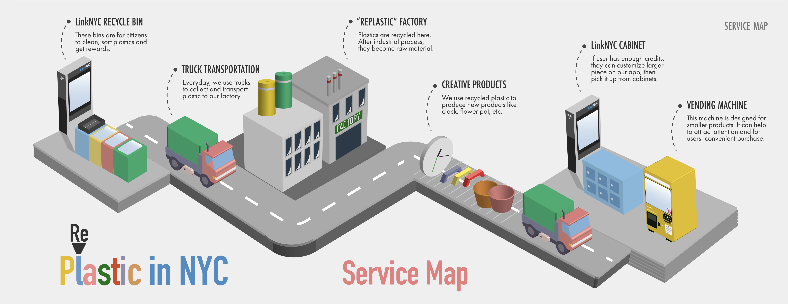
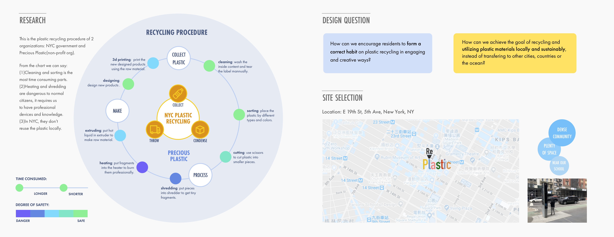
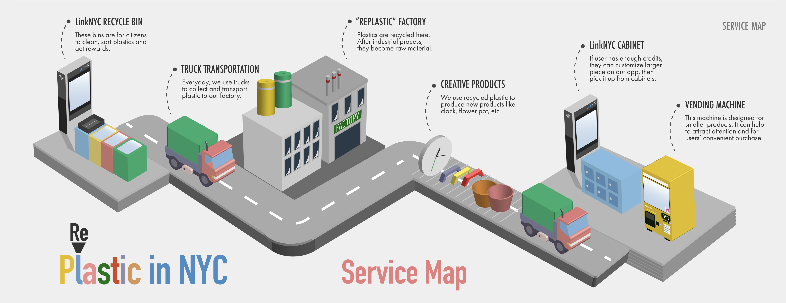
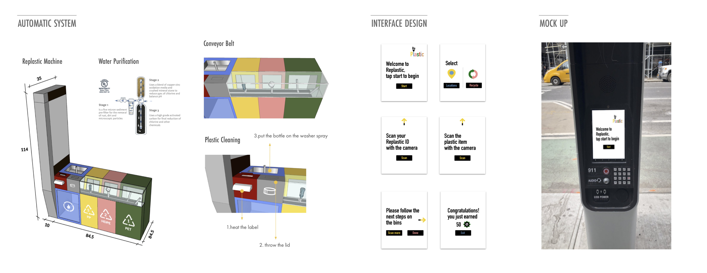
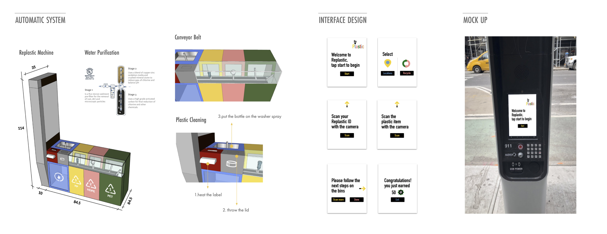

Replastic is a city-wide service design that encourage residents to form a correct habit on plastic recycling in NYC. We want to achieve the goal of recycling and reusing plastic materials locally and sustainably. Our project utilizes public resource well by having LinkNYC alongside.
I’m UX Designer, Graphic Designer in the group.
 



 
